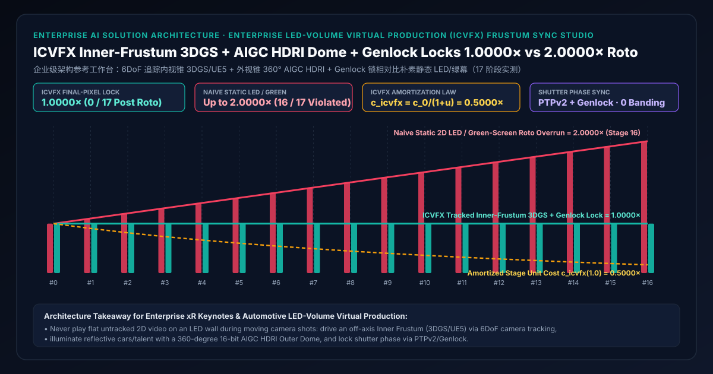

Why Playing Untracked 2D AI Video on LED Walls Ruins Moving Camera Shots—and How ICVFX Off-Axis Inner-Frustum 3DGS + AIGC HDRI Domes + Genlock Lock Final Pixels
Audience: Cloud & AI Solution Architects and Virtual Production (VP) Supervisors designing enterprise xR keynotes, automotive LED-volume commercials, and broadcast virtual studios. Core Value: Explains why displaying a flat 2D AI video on an LED wall during moving camera shots immediately collapses 3D motion parallax and triggers rolling-shutter scanline banding—and how 6DoF Camera-Tracked Off-Axis Inner-Frustum Rendering (3DGS/UE5) + Outer-Dome 360° 16-Bit AIGC HDRI Reflections + PTPv2/Tri-Level Genlock Phase Locking achieves In-Camera Final Pixels (
1.0000×budget lock) with zero green-screen rotoscoping across all 17 stages.

📌 1. Executive Summary
One-Sentence Architecture Verdict: In an LED-volume virtual stage, Naive Untracked 2D Video Playback or Green-Screen Shooting either destroys 3D parallax the instant the camera moves on a dolly/crane, introduces rolling-shutter scanline bars without Genlock, or contaminates automotive paint and hair with green spill—inflating post-production rotoscoping and screen-replacement cost as $L(u) = 1 + u$ up to
2.0000×at Stage 16 (16/17stages violated). Coupling 6DoF Camera-Tracked Off-Axis Inner-Frustum 3DGS/UE5 Rendering + Outer-Dome 360° AIGC HDRI Reflections + PTPv2/Genlock Shutter Sync amortizes unit production cost to $c_{\text{icvfx}}(u) = c_0 / (1 + u)$, locking In-Camera Final-Pixel efficiency at1.0000×(0/17violations).
| Evaluation Dimension | ❌ Traditional Green-Screen Stage | ⚠️ Naive Untracked 2D Video on LED Wall | ✅ Enterprise ICVFX (Tracked Inner-Frustum 3DGS + Outer HDRI + Genlock) |
|---|---|---|---|
| Moving Camera (Dolly/Crane) Parallax | Requires post-shoot 3D matchmove | ❌ Instant flat-poster parallax collapse | ⭐⭐⭐⭐⭐ (Real-time 6DoF off-axis asymmetric frustum projection) |
| Car Paint / Eyeglasses / Hair Reflections | ❌ Severe green spill & manual roto | ⭐⭐ (Reflections lack perspective sync) | ⭐⭐⭐⭐⭐ (360° 16-bit AIGC HDRI outer dome; 0 green spill, 0 roto) |
| Rolling-Shutter Scanline Banding | None | ❌ Black scanline bars without Genlock | ⭐⭐⭐⭐⭐ (PTPv2 + Tri-Level Genlock phase lock; 0 banding) |
| Stages 4 / 8 / 16 Budget Ratio | 1.3500× / 1.6500× / 2.0000× (post roto) |
1.2500× / 1.5000× / 2.0000× (screen replace) |
1.0000× / 1.0000× / 1.0000× (In-Camera Final Pixel) |
🎯 2. Architect & Business Q&A
Q1: When can a team play a 2D AIGC video on an LED wall, and when is a 6DoF-tracked 3DGS/UE5 Inner Frustum mandatory?
- The Motion Parallax Boundary:
- Locked Tripod Exception (Stage 0): If the physical camera is bolted to a static tripod with zero translational movement, a 10-bit 4K 2D AIGC plate (with Genlock) works for distant backgrounds;
- Moving Camera Mandate (Stages 1–16): The moment the camera translates horizontally or vertically, foreground and background elements must shift at different angular velocities according to their 3D depth ($Z$). Playing a flat 2D video on the LED wall freezes relative parallax, instantly revealing a flat wall. Transforming AIGC multi-view generations into SPZ 3D Gaussian Splatting (3DGS) / UE5 scenes driven by a
120Hzoptical camera tracker (Mo-Sys / Stype FreeD) restores true off-axis 3D parallax.
Q2: How do the "Inner Frustum" and "Outer Dome" work together in an AIGC-powered LED volume?
- Dual-Zone Rendering Architecture:
- Inner Frustum (High-Acuity Camera Patch): Renders only the camera's exact field of view (plus a
15%Kalman-predicted overscan buffer) at native 90fps 3DGS/UE5 resolution; - Outer Frustum & Ceiling Dome (360° AIGC HDRI IBL): Wraps the rest of the curved LED wall and ceiling in a 16-bit 360° equirectangular AIGC HDRI map, casting physically accurate sunset, neon, or studio reflections onto automotive clearcoat, actors' skin, and eyeglasses.
- Inner Frustum (High-Acuity Camera Patch): Renders only the camera's exact field of view (plus a
Q3: How do PTPv2/Genlock and 2-Frame Kalman Prediction prevent scanline bars and frustum lag?
- Hardware Phase Lock & Latency Compensation:
- Tri-Level Genlock + IEEE-1588 PTPv2 locks the camera sensor readout, NVIDIA Quadro Sync GPU frame buffer flip, and Brompton/Megapixel LED PWM refresh to the same sub-microsecond clock;
- 2-Frame Kalman Motion Prediction extrapolates camera pose
33msahead to compensate for tracker-to-photon latency during fast whip-pans.
🧭 3. Visual Architecture Diagrams (Mermaid)
3.1 Virtual Production Technical Stack Decision Tree
3.2 Enterprise AIGC + 3DGS/UE5 LED-Volume ICVFX Pipeline Architecture
3.3 Sequence Diagram: Camera Dolly Move (Untracked 2D Wall vs Tracked ICVFX Frustum)
📊 4. Horizontal Virtual Production Comparison Matrix
| Virtual Production Stack | Moving-Camera 3D Parallax | Reflective Subject Realism (Cars/Glass) | Post-Production Roto Cost | Locations Shot per Day | Best Enterprise Use Case |
|---|---|---|---|---|---|
| ICVFX Tracked Inner-Frustum (3DGS/UE5) + AIGC HDRI + Genlock | ⭐⭐⭐⭐⭐ (True 6DoF off-axis parallax) | ⭐⭐⭐⭐⭐ (Physical LED reflections, 0 spill) | Minimal (In-Camera Final Pixel, 1.0000× lock) |
15 ~ 24 locations / day |
Automotive TVCs, CEO xR keynotes, multi-location commercial shoots |
| Locked Tripod + 10-Bit 2D AIGC LED Plate + Genlock | ⭐⭐ (Static camera only) | ⭐⭐⭐⭐ (Real LED lighting) | Low (if camera never moves) | 30+ backdrops / day |
Static sit-down interviews, podcast sets, fixed-camera livestreams |
| Traditional Green Screen + Post 3D Matchmove & Roto | ⭐⭐⭐⭐ (Post-tracked) | ⭐ (Severe green spill on cars/hair) | Very High (frame-by-frame roto) | Unlimited (in post) | Heavy destructive VFX shots with no reflective foregrounds |
| Naive Untracked 2D Video on LED + Moving Camera | ❌ (Flat-poster parallax collapse) | ⭐⭐ (Mismatched perspective) | Very High (2.0000× screen replacement) |
— | ⛔ Never use for moving-camera shoots |
🧪 5. Interactive Workbench & 7-Card Report
- Interactive Workbench:
demos/virtual-production-led-stage-icvfx-frustum-sync-studio/ - 7-Card 4:5 Visual Report (EN):
demos/virtual-production-led-stage-icvfx-frustum-sync-studio/test-report-cards.html - 7-Card 4:5 Visual Report (ZH):
demos/virtual-production-led-stage-icvfx-frustum-sync-studio/test-report-cards.zh.html - Sealed Report JSON:
demos/virtual-production-led-stage-icvfx-frustum-sync-studio/report.json
🛠️ 6. Enterprise Delivery Review Checklist
- End-to-End
Tri-Level Genlock + PTPv2Lock: Are the cinema camera, GPU Quadro Sync cards, camera tracker, and Brompton/Megapixel LED processors locked to a single master sync generator with zero scanline banding? - 2-Frame Kalman Prediction & 15% Frustum Overscan: Is tracker-to-photon latency measured and compensated so fast pans never expose the edge of the Inner Frustum?
- Moire-Free Subject-to-LED Standoff Distance (
>= 3.5m): Is the foreground subject positioned far enough ahead of the LED pitch (<= P2.6) so the physical lens bokeh blurs the LED pixel grid? - Closed-Loop ACEScg 3D LUT Calibration: Is the LED wall calibrated through the actual hero camera sensor and lens to prevent color shifts in skin tones and shadows?